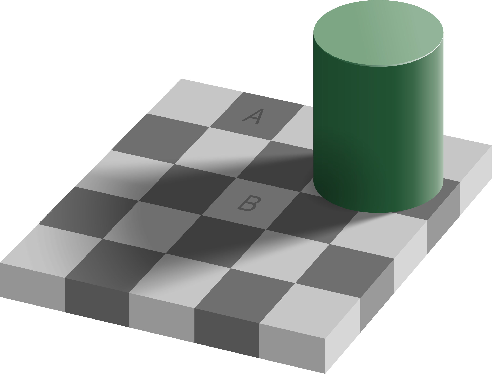

1. What is Cognitive Science and how do we study it?¶
Note
This chapter authored by Todd M. Gureckis and Hillary Raab is released under the license for the book.
1.1. Introduction¶
In this course, you will learn some of the basics of conducting psychological research into human perception and cognition (generally falling under the broader topic of “cognitive science”). This requires integrated knowledge of several topics: psychological theory, principles of experimental design, methods for statistical analysis of data, and reporting/summarizing results. You will learn the basics of all these across the upcoming semester.
However, before we begin it is useful to ask what is cognitive science? Is it different than psychology? What about cognitive neuroscience?
1.2. Psychology¶
The first thing to understand is that psychology is a vast field with many diverse interpretations and subfields. It is even confusing for me, as a professional “psychologist,” to describe what I do to many people because they might have the wrong impression.
For example, I was an electrical engineering major in college with interest in computer science and artificial intelligence. I never took a psychology course as an undergraduate. Now that I am a professor in a psychology department, people assume I’m anything from a counselor to a psychiatrist. However, I know next to nothing about these topics. At the same time, a clinical psychologist might not know how to program a neural network or a robot, whereas I do. We are both called psychologists. Confusing isn’t it?
All psychologists share an interest in human behavior, and most have an interest in the inner workings of the human mind, and most try to approach this using the scientific method (meaning using data to test hypotheses). However the range of things that fall within psychology is still endlessly confusing for the general public and for many other people as well!
So, somewhere within this huge space which is called “psychology,” there exists this somewhat smaller field called “cognitive science.” When did cognitive science become a thing? Who started it? Why? These are all great questions that we try to answer as you read this chapter.
1.3. Cognition and Perception¶
The title of this course is “Lab in Cognition and Perception.” Before unpacking the field of cognitive science, it is helpful to define these terms as well.
Cognition
Cognition is the area of psychology that focuses on internal mental processes. The processes include things like thinking, decision-making, problem-solving, language, reading, memory, and attention.
Perception
Perception is the area of psychology that examines how the brain processes sensory information, including vision, audition, touch, taste, smell.
In many ways, the study of cognition and perception, taken together, is the study of human intelligence because these topics examine how we (as a species) are so successful at adapting to our environment. When we say intelligence we don’t necessarily mean IQ tests (like how well a person can do on a test). We mean a more general sense such as how we are able to go about our daily lives without running into walls, getting endlessly lost, getting hit by a car, etc…
When we think about human intelligence, we often think about our capacity to build complex technologies like computers and put people into space. However, even seemingly mundane aspects of our daily life require remarkable types of intelligence. For example, people can walk across many different types of terrain (e.g., a carpeted hallway, a busy city street, or a treacherous mountain trail). This takes a tremendous amount of intelligence and the coordination of our perception and thinking abilities. We have to plan where to step, avoid obstacles, anticipate the movements of other people and cars, and keep in mind where we are headed. One way we know this is remarkable because it is very hard to build robots that can safely traverse these types of environments with the same agility.
The scientific study of cognition and perception is therefore the science of the workings of our internal mental processes. These mental processes enable us to perceive the world, think about it, interact with it, and modify it.
Cognition and Perception are just different elements of psychological research… sort of how the field breaks up a big topic like “how are we so smart?” into manageable sub-tasks. At NYU for instance, there are faculty such as myself, Brenden Lake, Bob Rehder, Brian McElree, Marjorie Rhodes, Andrei Cimpian and Cate Hartley that focus on cognition and others such as Mike Landy, David Heeger, Marisa Carassco, Denis Pelli, or Jonathan Winawer focus on perception. Others such a Larry Maloney, Clay Curtis, or Weiji Ma tend to work on both topics.
Cutting across this is cognitive neuroscience which is yet another sub-field which studies the way that the brain enables cognition and perception. Cognitive neuroscientists mostly study the same topics as experts on cognition or perception, but often include additional dimension about how such abilities might be organized in the brain. In many ways cognitive neuroscience is less of a distinct field itself but a set of methods that people adopt when studying cognition and perception. One unique aspect of cognitive neuroscience that has a somewhat distinct is an emphasis on the localization of mental functions (i.e., asking where in the brain are our memories stored or where in the brain do we make decisions). The “where in the brain” question is largely a neuroscience question rather than a psychological one. However, cognitive neuroscience is an interdiscplinary field and thus adopts some of the same goals as you might have in neuroscience. In addition to localizing mental function, some research in cognitive neuroscience tries to understand what the neural computations that our brains actually perform. This field is often known as computational neuroscience or cognitive computational neuroscience.
1.4. So how does “Cognitive Science” fit in?¶
A key, defining aspect of the field of cognitive science is that idea that intelligence is a property of systems rather than of humans or animals specifically. Thus, a robot or a computer program might show some elements of “intelligence” (we often call that “artificial intelligence”). Even plants might show intelligence. Under this view, intelligence just means complex forms of sensing and adaptating to the environment. Intelligence might be more of a scale rather than an all-or-nothing property that a system might have.
Once you start thinking in this more general way a lot of exciting ideas come to you. For instance, we are smart but are we the smartest? Like perhaps human cognition is good but represents a relatively low bar in the world of intelligences. Perhaps some alien life form or a super-powered artificial intelligence system would be even more intelligent than humans! You also might start wondering what stops us from being smarter. Do we have limited memories? Does our ability to attend to only a small number of things at once limit us? How we might develop tools or technologies that would make us overcome these limitations?
This broader perspective also makes fields outside of psychology seem more relevant. For instance, once you think of intelligence as a property of systems rather than animals, then computer science research on artificial intelligence becomes much more interesting and relevant to psychology. In addition, fields like linguistics which study in detail the structure and function of language become important (language is one of the tools that humans use to make us super smart!). Anthropology, which studies differences in human behavior across cultures, becomes interesting because it helps us to understand which aspects of our intelligence are universal and which come from our culture. Neuroscience helps us to understand the detailed internal structure of naturally intelligent systems (e.g., animals). Developmental psychology is also interesting: how do the building blocks of intelligence form over our lives?

Fig. 1.1 The logo for the Cognitive Science Society, a professional society devoted to advancing the study of the human mind. The logo represents the interdisciplinary nature of the field combing Education, Linguistics, Neuroscience, Philosophy, Psychology, Anthropology, and Artificial Intelligence.¶
If you look at Figure 1.1, you can see the logo for the major professional society devoted to Cognitive Science (the Cognitive Science Society). The logo is made up of seven aligned fields each concerned with intelligence in the abstract. If you are like me and have trouble deciding which topic you find most interesting to study (because you like a lot of different things), Cognitive Science could be a great field for you.
In sum, Cognitive Science is a fundamentally interdisciplinary field that connects across university departments. Some universities have created their own “Cognitive Science” department and major. However, it is more common that Cognitive Science is a field that exists between departments. Sometimes people refer to the aligned disciplines as the “Cognitive Sciences.” There are interesting recent discussions about the definition of this field [Núñez et al., 2019] (pdf).
1.5. The Computational Theory of Mind¶
One of the most essential ideas in Cognitive Science is the theory of the “computational theory of mind.” According to this idea, the primary purpose of our minds and brains is to compute. What do we mean by compute? Well, the theory holds that the mind runs something akin to a computer program that processes information you receive through your perception and uses that to guide your behavior. There is an excellent and comprehensive explanation of the history and current content of the “computational theory of mind” here.
Now, when you think about your own behavior you might find it hard to think of what you do as a program. Most programs you interact with are often somewhat fixed and rigid. For example, Google Sheets or Docs just follows rules to determine how to format a document. Although these programs are complex they are nowhere near as complex as you! However, we are increasingly seeing that new types of computer programs are entering our lives that seem a lot more human-like. For instance you can talk to your Google phone or Siri and it will retrieve general facts (try asking Siri or Google “How old is Obama?”). In addition, it can even understand some subtle aspects of language (if you followup and ask Google “How old is his wife?” it will often correctly interpret that “his” refers to Obama and then tell you Michelle Obama’s age). Since we also comprehend speech and can speak back with information we have stored in our minds, such programs seem a bit more human-like.
However, you still might object to the idea that you are a computer program because of examples like how emotions and mood affect your behavior. You are also quite complex! You don’t just sit there waiting for a person to ask you questions, you have ideas and goals yourself. It is true that we don’t have computers currently that have such broad self-motivated desires and goals (although this is a topic I explore in my own research, [Gureckis and Markant, 2012]!). However, there isn’t an in-principle reason to assume that things like emotions or goals are not something computers could one day be programmed to posess (read more about this here). Emotions for instance might be triggered by particular mental thoughts and states and act as warning signals about distress or discomfort. In other words there might be some underlying rationale or purpose that can be described in detail.
The reason that many are confident about the computational theory of mind has to do with theoretical work done by Alan Turing on the concept of universal computation [Turing, 1936]. Going deeply into the theory of universal computation and Turing machines is beyond the scope of this class. However, Turing showed that there exists a very simple machine (called a universal Turing machine) which can be programmed to implement basically all other types of machines. As it turn out, the computer you are reading this on is itself a Turing machine. As a result, the computer you are reading this on is, in principle, capable of running a program that would correspond to the set of rules that your mind runs. Some advocates for the computational theory of mind view this fact as evidence that using computers to implement cognitive theories is ultimately going to be successful. Others take a bit stronger view that the mind literally is a computational device (not just one that can be approximated quite closely with a computer program).
It is possible to also adopt somewhat more pragmatic view on these things. The computational theory of mind can be practically useful because it forces theorists to be more concrete and explicit about what they mean. Instead of a theory that is expressed in words, writing code to represent your theory makes you specify each of the elements of the code in detail. Then, these different aspects can be debated more honestly.
1.6. Is Cognitive Science is the hardest science?¶
The study of the human mind and intelligence is perhaps one of the most significant open challenges in science. It is a challenge for two main reasons. One is that we don’t really understand yet how we are so smart. We simply can’t engineer a machine to act as smart as us, despite the fact that there would be a lot of money to be made if you could make a robot with the same capabilities as a person. The second is that even when we do have some ideas about how to implement a mind or brain, it is a challenge to do so as simply, effortlessly, and cheaply as a human. To help put this in perspective, let me tell a little story.
Dharmendra Modha is a computer scientist at IBM who works on the design of advanced computer chips. One of his research projects was to develop large scale simulations of realistic sized neural networks. In his research, he would work with neuroscientists to obtain detailed neural wiring diagram of the brain of a various animals (including mice, cats, and even monkeys or humans). The wiring diagram shows the way the individual neurons are connected to one another. It was long thought that if we understood how our brains are wired up, how different neurons connect to one another, and how those neurons fire, then we could basically understand what our brains are doing by just putting it all into a big computer simulation. The computer simulation would follow the rules of what each neuron does, and if it was wired in the same way as an animal brain you would have basically made a copy!
{kind=link}
Fig. 1.2 The wiring diagram of a mouse brain, created by the Allen Insitite for Brain Science¶
So Dr. Modha created computer simulation which aimed to model the wiring and firing of all the neurons in a monkey brain using a model with about 500 billion individual neurons. If he was successful, he would basically have created a synthetic monkey brain – a system complex enough to do the types of everyday intelligence that monkeys are known for including certain types of problem solving, complex coordinated movements, and even types of social behavior.
However, the simulation he ran requires a huge number of computer chips to simulate all those 500 billion neurons. In fact, about 1.5 million chips in total. Computer chips have to be plugged into the wall and it is hard to imagine a building with 1.5 million electrical outlets, right? Even crazier is that this entire super-computer system consumed 12 gigawatts of energy, which is about six times the output capacity of the Hoover Dam. And this computer ran the firing of the neurons inside this brain about 1,500 times SLOWER than they would work inside a living monkey brain [Ravindran, 2019]. So really, it was just too hard to do very much and you could only simulate the brain for a few minutes or seconds rather than a long enough period to understand something like complex cognitive acts.
The amazing thing is that a monkey (or human) doesn’t have to be plugged into the wall, and runs its brain off a few bananas or slices of pizza! Consider here the power requirements of various things you might consider familiar:
Device |
Power |
|---|---|
Hearing aid |
1 milliWatt |
Human Brain |
20 Watts |
Light Bulb |
20 Watts |
Desktop CPU |
50-100 Watts |
Wind Turbine |
2-3 Megawatts |
Hoover Dam |
2 Gigawatts |
Supercomputer |
12 Gigawatts |
So you can see that the human brain runs on about as much power as a light blub and yet is able to do much more than just give off heat and light: It holds all your thoughts, dreams, memories, emotions, and perceptions!
So the central mystery is how do you get such complexity into a system, such advanced behavior, with such low power requirements? Dr. Mohda’s work suggests that either we need to come up with much more power-efficient computer chips (in fact that is what he studies now: bio-morphic computing and low-power computing chips designed for AI), but alternatively we need to think about intelligence at some more abstract level than in terms of individual neurons. For example, maybe we can forget about the neurons part all together and think about things in completely different terms while still getting the main benefits of the intelligence. This is basically one of the core scientific challenges in cognitive science: How do we get such immense and flexible intelligence with so little in terms of resources (e.g., energy).
1.7. Example Mysteries of Cognitive Science¶
To give you a sense of some of the interesting questions that cognitive scientists study, let’s consider a few examples of human cognition and perception that need to be explained (and in some cases have been).
1.7.1. Color constancy¶
Take a look at the following image noting the two tiles labeled “A” and “B”:
Interestingly, these two tiles are exactly the same color in this image. However “B” looks considerably lighter than “A.” Why is that the case?
It turns out that our brains do not perceive color absolutely. Instead, we view color in the context of our perception of an overall scene. This includes things like shadows and other lighting sources that might alter the perceived color. In fact, take a look around you. Chances are you are sitting in a room where light causes shadows and reflections off the walls. Even though the color of the wall hitting your eye is not the same at every place on the wall (some parts darker some lighter) you generally perceive the wall as being painted a single color and attribute the color differences to the lighting. This is the basic phenomena of color constancy – how our brains determine which differences in color that our eyes perceive are “real” differences in color and which are caused by lighting and other effects.
Understanding how the brain accomplished color constancy is a major research question within the study of perception, which has important implications for computer vision as well. In order for a computer to correctly detect an apple in the environment, it has to realize that under certain lighting an apple might even appear purple or grey.
1.7.2. Concept and Word learning¶
One amazing aspect of child development is the speed at which children learn new words in their language. In the period between about 16 and 30 months children go through a “vocabulary explosion” during which they learn, on average, 10 words a day!

The problem of word learning is a major mystery in the field of cognitive science. The reason is that kids often correctly learn the meaning of a new word from only one or two example usages of the word. In contrast, contemporary machine learning systems often take millions of examples of images and word labels in order to correctly classify pictures of everyday objects [Lake et al., 2017]. So the question is, how do young children get so much from so little input?
1.7.3. Deciding by Planning¶
When you woke up this morning, you probably mentally went over all the things you needed to do today and where you needed to be. As you thought about this, you might have decided some of the order in which you would do things (e.g., first drop off laundry, then go to class, then grab lunch, etc…). The way in which we plan for the future and use that to make decisions is an area of cognitive science which is currently very heavily studied.
One very interesting piece of data is the fact that neural recordings reveal aspects of prospective planning in rodents. In the hippocampus, it is well known (in fact, this work won the Nobel Prize in 2014!) that certain cells in the hippocampus seem to fire strongly when an animal is in a particular location in space (e.g., a particular hallway in a well-learned maze or the corner of a particular room). By tracing out which cells fire at different places, neuroscientists are able to make “maps” of space in terms of neurons. These maps are so accurate that you can basically know where an animal is in space just by looking at which neurons are firing.
Even more interestingly, when the neurons of rodents are recorded as they move through a maze, you can see neural activity that seems to “sweep” forward (and sometimes backwards) from the current position as though the rodent is imagining where they will go in the future [Pfeiffer and Foster, 2013]. For example in this video from [Johnson and Redish, 2007], the circle is the current position of the rat and the colored pixels show the firing rat of hippocampal place cells that already have been mapped to particular positions in the maze.
What is interesting is that the neurons that are firing the most are associated with locations immediately in front of the rat, like the rat is imagining locations where they will be in the future.
Now, planning for the future like this is a critical part of current machine learning systems. For example, recently Google developed a system that can play the game “Go” as well as world champions [Silver et al., 2016]. This algorithm also uses the concept of planning. Thus a central question is how humans use planning to think about and decide courses of action. There is a great Netflix movie about the drama of building a computer to beat the world champion at Go.
1.8. Learn more¶
To learn more about the field of cognitive science here are several high quality videos from leaders in the field discussing the current state of the art and the open issues to be tackled in the future:
Josh Tenenbaum - The mathematics of natural intelligence
James DiCarlo - Reverse engineering visual intelligence
Linda Smith - Word Learning From the Infant’s Point of View
1.9. References¶
- GB98
R.L. Goldstone and L. Barsalou. Reuniting perception and cognition. Cognition, 65:231–262, 1998.
- GM12
T.M. Gureckis and D.B. Markant. A cognitive and computational perspective on self-directed learning. Perspectives in Psychological Science, 7:464–481, 2012.
- JR07
A. Johnson and A.D. Redish. Neural ensembles in ca3 transiently encode paths forward of the animal at a decision point. Journal of Neuroscience, 27(45):12176–89, 2007.
- LUTG17
B.M. Lake, T.D. Ullman, J.B. Tenenbaum, and S.J. Gershman. Building machines that learn and think like people. Behavioral and Brain Sciences, 40:E253, 2017.
- NunezAG+19
Rafael Núñez, Michael Allen, Richard Gao, Carson Miller Rigoli, Josephine Relaford-Doyle, and Arturs Semenuks. What happened to cognitive science? Nature Human Behaviour, 3(8):782–791, 2019. URL: https://doi.org/10.1038/s41562-019-0626-2, doi:10.1038/s41562-019-0626-2.
- PF13
B. E. Pfeiffer and D. J. Foster. Hippocampal place-cell sequences depict future paths to remembered goals. Nature, 497(7447):74, 2013.
- Rav19
S. Ravindran. Building a silicon brain. The Scientist, 2019. URL: https://www.the-scientist.com/features/building-a-silicon-brain-65738.
- SHM+16
David Silver, Aja Huang, Chris J. Maddison, Arthur Guez, Laurent Sifre, George van den Driessche, Julian Schrittwieser, Ioannis Antonoglou, Veda Panneershelvam, Marc Lanctot, Sander Dieleman, Dominik Grewe, John Nham, Nal Kalchbrenner, Ilya Sutskever, Timothy Lillicrap, Madeleine Leach, Koray Kavukcuoglu, Thore Graepel, and Demis Hassabis. Mastering the game of go with deep neural networks and tree search. Nature, 529:484 EP –, 01 2016. URL: https://doi.org/10.1038/nature16961.
- Tur36
A. Turing. On computable numbers, with an application to the entscheidungsproblem. Proceedings of the London Mathematical Society, pages 230–265, 1936.